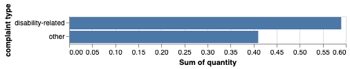
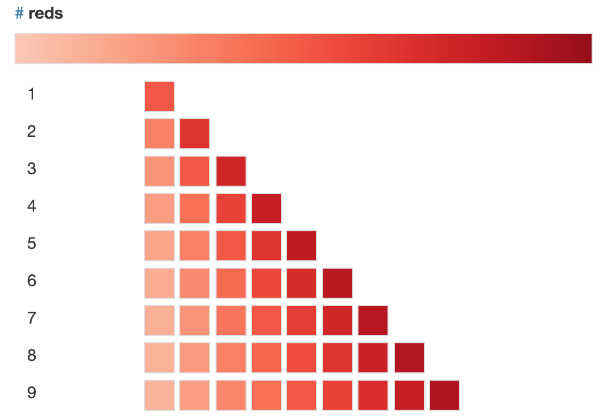
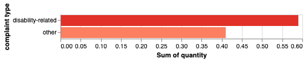
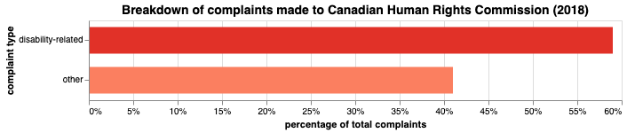
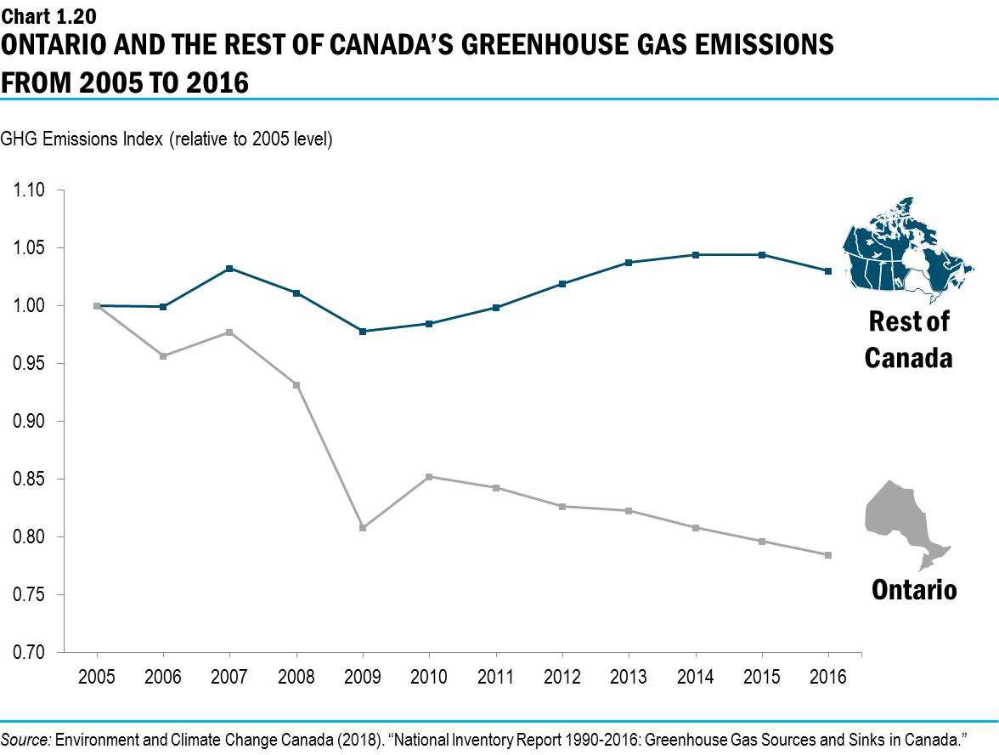
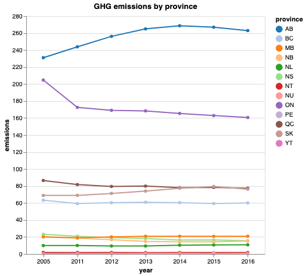
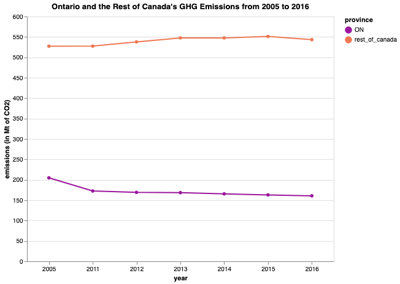
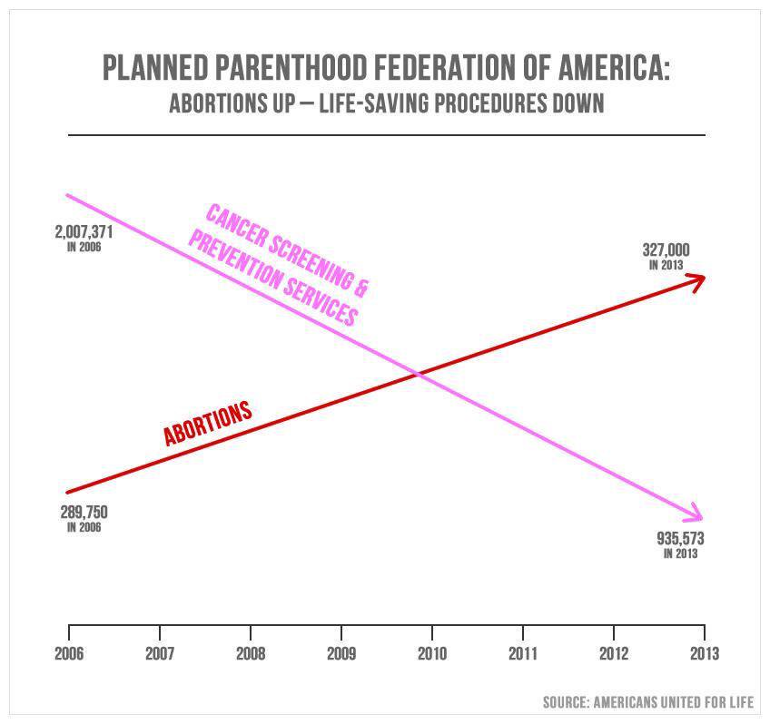
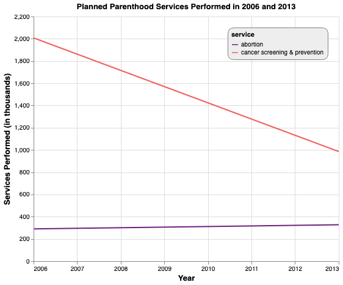

Altair to the Rescue: A beginner-friendly altair tutorial
Sun 07 July 2019
{kind=link}
Some charts are confusing, some hard to interpret, and others are just boring, while still others (albeit a special, minority few) require that the rules of math and logic break in order to establish a reality in which they make sense. By manipulating data, not only is it possible to tell a story, but to frame it in a way that fits a particular narrative. How we choose to represent data visually is a crucial part of telling the story.
This post covers the basics of Altair, walking through the first steps needed to create a visualization, and involves taking some pretty terrible charts and remaking them into their best selves.
Table of Contents
Packages used:
import altair as alt
import pandas as pd
import numpy as np
alt.renderers.enable('notebook');
Making bar charts in Altair
Humans aren’t great at estimating area or visual divisions of area. For this reason, donut charts are not optimal for comparing two proportions visually—bar charts work much better for this.

“This graphic is a breakdown of the discrimination complaints received by the Canadian Human Rights Commission in 2017-18. In that year, disability complaints represented 59% of complaints while 41% of complaints were other.” (From the 2018 Federal budget)
The easiest way to fix this is to spin up a super simple dataset representing these data.
Altair charts take pandas dataframes as arguments, so we throw our simple dataset into one with pd.DataFrame().
df = pd.DataFrame({
'complaint type': ['disability-related', 'other'],
'quantity': [0.59, 0.41]
})
df
| complaint type | quantity | |
|---|---|---|
| 0 | disability-related | 0.59 |
| 1 | other | 0.41 |
Now we’ll try out the simplest visualization possible.
alt.Chart(df).mark_bar().encode(
x='sum(quantity)', # the 'x' channel
y=alt.Y('complaint type') # the 'y' channel
)

Here’s a quick breakdown of what’s happening here:
alt.Chart(df)specifies the data you want to use in your chart (where df = your pandas dataframe)
.mark_bar()specifies a bar chart as the type of visualization you want to use.
.encode()is where you input (i.e., encode) your chart axes. - You can map any column in your dataset to either the ‘x’ or ‘y’ encoding channel (each channel corresponds to the x- and y-axis, respectively). - Read more in the Altair documentation here.
Using colours
color = alt.Color('complaint type') # setting colour to correspond to the selected column
alt.Chart(df).mark_bar().encode(
x='sum(quantity)',
y=alt.Y('complaint type'),
color=color
)
To set a particular colour scheme, use scale=alt.Scale(scheme='scheme name') in the alt.Color method.
color = alt.Color('complaint type', scale=alt.Scale(scheme='reds'))
alt.Chart(df).mark_bar().encode(
x='sum(quantity)',
y=alt.Y('complaint type'),
color=color
)
Here are a few more single-hue colour schemes:
- teals
- oranges
- reds
- purples (…you get the point.)
The following are several more categorical and multi-hue schemes I like:
- plasma
- magma
- accent
- dark2
- set3
- tableau10
Visit Vega’s colour scheme page for even more options!
A default legend is provided when you set colour on a column to show you what category/value each colour corresponds to. This can be helpful but might actually be redundant, and therefore unnecessary in this case, since the information provieded by the legend is already encoded and labelled on the chart itself. To remove the legend, simply set legend=None in the color property. It should look something like this:
alt.Color('column to set color on', legend=None)
What if I want to swap the colours of the bars?
In the alt.Color() method, which uses Vega’s colour schemes, discrete colours are assigned such that the index of the value in the column you’ve set color on matches the index of the colour in the scheme (at the row that corresponds to the number of values present in your column). I encoded the values for 'complaint type' as ['disability-related', 'other'], so the default setting assigns 'disability-related' the lighter, first-appearing colour in the image below at row 2.

In the domain argument of Scale – inside alt.Color(scheme=alt.Scale())) – we can rearrange the order of the values so that they correspond to the order of the colours we want to assign them. Since the categories were originally encoded as ['disability-related', 'other'], and we want to switch the colour assignments, we do so such that the order matches the order of the colours—so, in this case we’d want:
`domain=['other', 'disability-related']`.
Of course alternatively we could just go back and change the order of the values where we first encoded them into the dataset, but this is an easy way to alter things without having to go back and make actual changes to the data.
color = alt.Color('complaint type',
legend=None,
scale=alt.Scale(scheme='reds', domain=['other', 'disability-related']))
alt.Chart(df).mark_bar().encode(
x='sum(quantity)',
y=alt.Y('complaint type'),
color=color
)

Specifying axis information
We use alt.X() when we want to encode more than just the column name—maybe we want to include an axis title, formatting (e.g., displaying as percentage, adjusting scale), labels and ticks, etc.
To add formatting and set the axis title, I’ll use alt.Axis() with the arguments “format”, which sets the text formatting pattern, and “title” (as shown in the following code). I like to keep the code in the chart specification as clean as possible, so I prefer building up this extra information outside of the alt.Chart() function. I’ll assign alt.Axis(format='%', title='percentage of total complaints') to a variable called x_axis so that I can simply call it from within alt.X() and pass it as the axis argument.
x_axis = alt.Axis(format='%', title='percentage of total complaints')
Size
Bars:
You can alter the width of the bars by setting size=desired size as float or int in the mark_* method, as I’ve done below to make the bars a bit wider than the default width.
Chart:
To adjust the size of the chart, we can set custom measurements with width and height in the .properties() method.
chart = alt.Chart(df).mark_bar(size=30).encode(
x=alt.X('sum(quantity)', axis=x_axis),
y=alt.Y('complaint type'),
color=color
).properties(
width=600,
height=90,
title='Breakdown of complaints made to Canadian Human Rights Commission (2018)'
)
Title
Every chart should have a title—donut chart is lacking here. To customize your chart title, use chart.configure_title .
Some useful attributes:
anchorsets the title alignment. Valid inputs are ‘start’ (right alignment), ‘middle’ (centre) and ‘end’ (left).orientset the position of the title. Valid inputs are ‘top’, ‘bottom’, ‘left’ and ‘right’ (with top/bottom corresponding to above/below the chart).fontSizefontcolor
Note: By throwing our chart into a variable called chart, we can access it in other instances without having to repeatedly include all of the code for the visualization.
chart.configure_title(
fontSize=14,
font='Helvetica',
anchor='middle',
color='black',
)

Voilà! Now this data is truly living its best life.
Line chart makeover

Taken from the provinical government’s 2019 budget
What’s wrong with this picture?
There’s no unit given for the scale on the y-axis. At first glance, it seems that while Ontario and Canada begin at the same starting point (“1”) in 2005, Ontario’s GHG emissions decline sharply while “the rest of Canada” experiences little variation over the same period. Notice, however, the incongruency between the title and subtitle (which supposedly describes what’s being measured)—“Ontario & Friends’ Greenhouse Gas Emissions from 2005 to 2016” versus “GHG Emissions Index“. An index of emissions is quite different from actual emissions in a valid unit of measurement, like megatonnes (Mt) of CO2. This is the unit used in the source data, and the unit I’ll be using in my reconstructed visualization.
Just doing some basic data cleaning here so I can access the relevant data from the National Inventory Report from Environment Canada (the same source used for the above chart).
df = pd.read_csv("ghg-emissions-data.csv")
df.columns = [i.strip() for i in df.columns]
df.columns = [i.replace('–','-') for i in df.columns]
df.drop(['2005-2016', '1990'], axis=1, inplace=True)
df = df.reset_index()
df.rename(columns={'index': 'province'}, inplace=True)
provinces = []
ordered_vals = []
year = []
for c in df.columns:
for i in df[c]:
if c != 'province':
ordered_vals.append(i)
index = df[df[c] == i].index[0]
prov = df.iloc[index][0]
provinces.append(prov)
year.append(c)
data = pd.DataFrame()
data['emissions'] = ordered_vals
data['province'] = provinces
data['year'] = year
nat_drop = list(data[data['province'] == 'Canada'].index)
provs = data.drop(nat_drop, axis=0)
Here I’ve created a dataframe containing data on Canada’s greenhouse gas (GHG) emissions and including the number of emissions (in Mt of CO2), the year over which the emissions were released, and the province the emissions came from. provs is a second dataset not including the national total of emissions, whereas this figure is included in data .
There’s also a point argument for the mark_line() method. If we set point=True, we get the line as well as a visual representation of each of the individual data points it intersects. This can be useful for when the data is on the sparse side, and makes it clear where the actual data sit. Remember, unless you have an inordinate number of datapoints, the line is just the trend between two points. Anywhere on the line between two points—say, Canada’s line at the x-value halfway between 2012 and 2013—isn’t necessarily representative of the true y-values (emissions) at that value of x (circa July 2012).
chart = alt.Chart(provs).mark_line(point=True).encode(
x=alt.X('year:N'),
y=alt.Y('emissions:Q'),
color=alt.Color('province:N',
scale=alt.Scale(
scheme='category20')
)
).properties(
width=400,
height=400,
title='GHG emissions by province')
chart.configure_axisX(labelAngle=0) # this sets the angle of the x-ticks

As we can see, Ontario is actually still producing a far greater quantity of emissions than any other province except for Alberta. The following is the text accompanying the original chart:
“Ontario has been a leader in the efforts to tackle climate change. Compared with 2005, the province’s total greenhouse gas emissions have dropped by 22 per cent — even while the rest of Canada saw emissions increase by three per cent during the same time period.”
In splitting the data this way (Ontario vs. the rest of Canada) the trend observed for “the rest of Canada” is highly influenced by Alberta’s emissions. That is, the only reason the rest of Canada saw a 3% increase in emissions is because Alberta saw a substantial increase, while most other provinces either stayed the same or saw a decrease in emissions.
canada_tot = data[data['province'] == 'Canada']
ontario = data[data['province'] == 'ON']
ontario.rename(columns={'emissions':'emissions_on', 'province': 'province_on'}, inplace=True)
can_on = pd.merge(canada_tot, ontario, on='year')
# Subtracting Ontario's yearly emissions from Canada's total yearly emissions in order to plot
# Ontario against the rest of Canada
rest_of_canada = []
for i in can_on['emissions']:
index = can_on[can_on['emissions'] == i].index[0]
on = can_on.iloc[index][3]
rest_of_canada.append(i - on)
can_on['rest_of_canada'] = rest_of_canada
rest_of_canada # this now includes all the values of GHG emissions from every province but Ontario.
# spinning up a new dataframe with the values for the rest of Canada
canada_minus_on = pd.DataFrame({
'emissions': rest_of_canada,
'province': ['rest_of_canada','rest_of_canada','rest_of_canada','rest_of_canada','rest_of_canada',\
'rest_of_canada','rest_of_canada'],
'year': [2005, 2011, 2012, 2013, 2014, 2015, 2016]
})
totals = provs.append(canada_minus_on)
# comparing Ontario and the rest of Canada
can_vs_on = totals[(totals['province'] == 'rest_of_canada') | (totals['province']== 'ON')]
Finally, a slightly more accurate visual depiction of these data.
axis = alt.Axis(title='emissions (in Mt of CO2)')
chart = alt.Chart(can_vs_on).mark_line(point=True).encode(
x=alt.X('year:N'),
y=alt.Y('emissions:Q', axis=axis),
color=alt.Color('province:N',
scale=alt.Scale(
scheme='plasma')
)
).properties(
width=500,
height=400,
title='Ontario and the Rest of Canada\'s GHG Emissions from 2005 to 2016')
chart.configure_axisX(labelAngle=0) # this sets the angle of the x-ticks

From this representation, it’s clear that Ontario and the rest of Canada have drastically different starting points—quite contrary to what the chart from the budget would have you think.
Another line chart makeover

What’s wrong with this picture?
-
No scale for y-axis
-
Missing axis labels
-
Differing y-axes for each line, since the number of prevention services performed in 2013 still far exceeds the number of abortions (in the order of 600,000), and yet the prevention data at 2013 is depicted as below the data for abortions at the exact same x-value.
-
You’ll also notice the slopes of the lines are about the same, upon quick visual inspection. The difference between abortions performed in 2006 (289,750) and those performed in 2013 (327,000) is much less than the difference between prevention services performed in 2006 (2,007,371) and those performed in 2013 (935,573). We can further quantify this by comparing the slopes:
print(f'The slope of A (abortions) is: {round((327_000 - 289_750) / (2013 - 2006), 2)}')
print(f'The slope of B (cancer screening and prevention services) is: {(935_573 - 2_007_371) / (2013 - 2006)}')
The slope of A (abortions) is: 5321.43
The slope of B (cancer screening and prevention services) is: -153114.0
What does this mean?
Every year (i.e., for every 1 unit in increase along the x-axis), there are 5321 more abortions performed.
Every year, there are 153114 fewer prevention and screening services performed.
aul_df = pd.DataFrame({
'service': ['abortion', 'abortion', 'cancer screening & prevention', \
'cancer screening & prevention'],
'services performed':[289_750, 327_000, 2_007_371, 985_573],
'year': [2006, 2013, 2006, 2013]
})
aul_df.year = pd.to_datetime(aul_df.year, format='%Y')
aul_df['services performed'] = [i/1000 for i in aul_df['services performed']]
x_axis = alt.Axis(title='Year', titleFontSize=13)
y_axis = alt.Axis(title='Services Performed (in thousands)', titleFontSize=13)
color = alt.Color('service', scale=alt.Scale(scheme='magma'))
ppchart = alt.Chart(aul_df).mark_line().encode(
x=alt.X('year', axis=x_axis),
y=alt.Y('services performed', axis=y_axis),
color=color
).properties(
title= 'Planned Parenthood Services Performed in 2006 and 2013',
width=500,
height=400
)
ppchart.configure_title(
anchor='middle',
fontSize=20,
color='black',
font='Helvetica'
)
ppchart.configure_legend(
columns=1,
strokeColor='gray',
fillColor='#EEEEEE',
padding=6,
cornerRadius=10,
orient='top-right'
)

How this chart is better:
-
uses a valid, to-scale y-axis
-
labels for both axes
-
it has a consistent, shared y-axis for both lines.
✨Before & Afters ✨
Chart 1


Chart 2


Chart 3